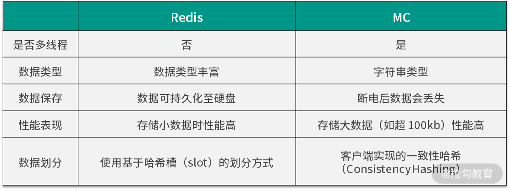
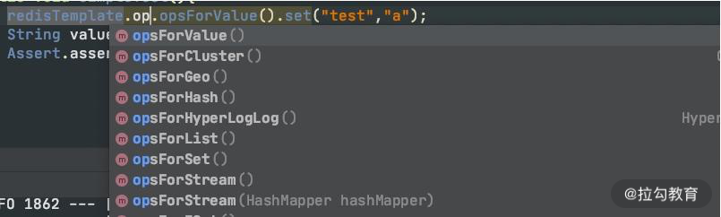
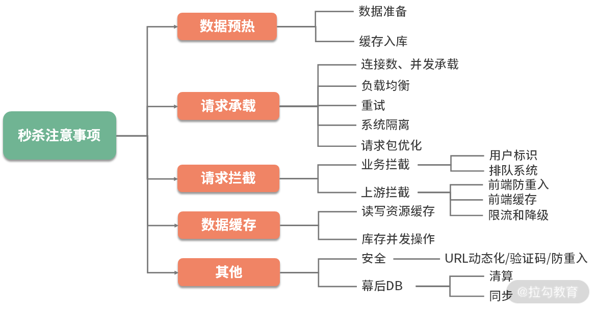
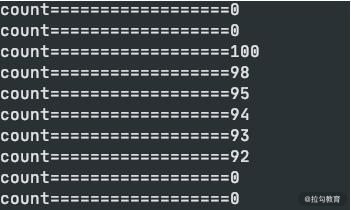
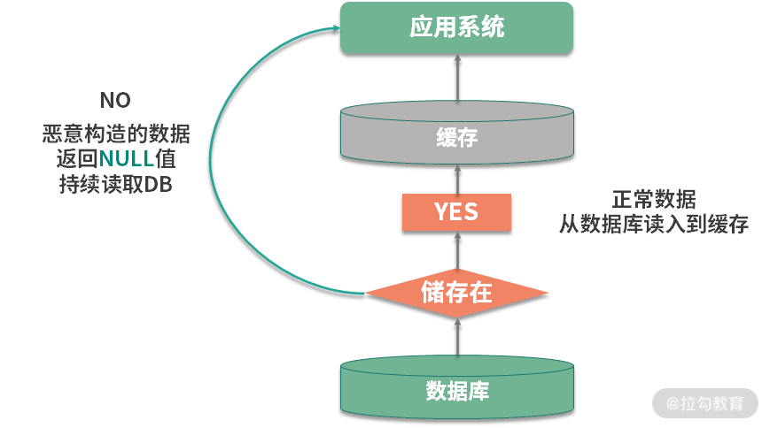
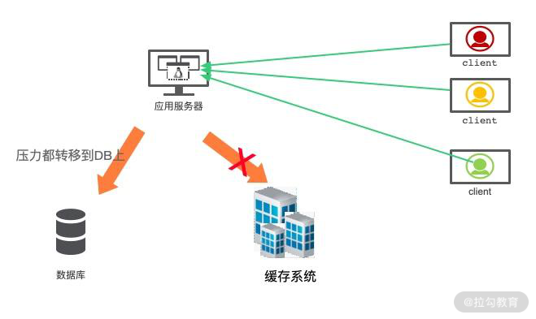
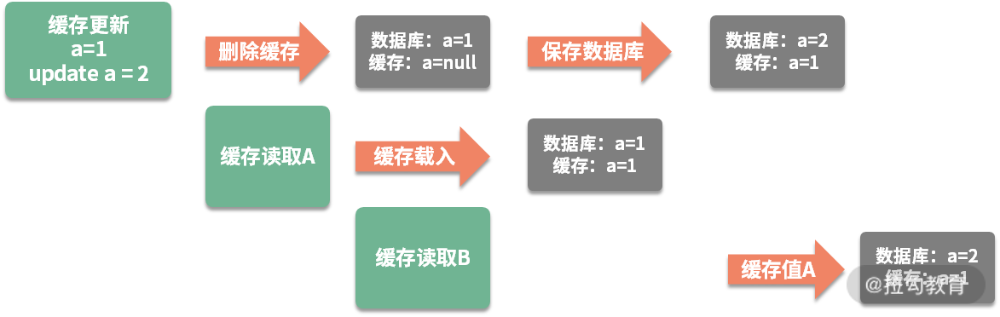

- 00 Java 性能优化，是进阶高级架构师的炼金石.md.html
- 01 理论分析：性能优化，有哪些衡量指标？需要注意什么？.md.html
- 02 理论分析：性能优化有章可循，谈谈常用的切入点.md.html
- 03 深入剖析：哪些资源，容易成为瓶颈？.md.html
- 04 工具实践：如何获取代码性能数据？.md.html
- 05 工具实践：基准测试 JMH，精确测量方法性能.md.html
- 06 案例分析：缓冲区如何让代码加速.md.html
- 07 案例分析：无处不在的缓存，高并发系统的法宝.md.html
- 08 案例分析：Redis 如何助力秒杀业务.md.html
- 09 案例分析：池化对象的应用场景.md.html
- 10 案例分析：大对象复用的目标和注意点.md.html
- 11 案例分析：如何用设计模式优化性能.md.html
- 12 案例分析：并行计算让代码“飞”起来.md.html
- 13 案例分析：多线程锁的优化.md.html
- 14 案例分析：乐观锁和无锁.md.html
- 15 案例分析：从 BIO 到 NIO，再到 AIO.md.html
- 16 案例分析：常见 Java 代码优化法则.md.html
- 17 高级进阶：JVM 如何完成垃圾回收？.md.html
- 18 高级进阶：JIT 如何影响 JVM 的性能？.md.html
- 19 高级进阶：JVM 常见优化参数.md.html
- 20 SpringBoot 服务性能优化.md.html
- 21 性能优化的过程方法与求职面经总结.md.html
- 22 结束语 实践出真知.md.html
08 案例分析：Redis 如何助力秒杀业务
在上一课时，我们以 Guava 的 LoadingCache 为例，介绍了堆内缓存的特点以及一些注意事项。同时，还了解了缓存使用的场景，这对分布式缓存来说，同样适用。
那什么叫分布式缓存呢？它其实是一种集中管理的思想。如果我们的服务有多个节点，堆内缓存在每个节点上都会有一份；而分布式缓存，所有的节点，共用一份缓存，既节约了空间，又减少了管理成本。
在分布式缓存领域，使用最多的就是 Redis。Redis 支持非常丰富的数据类型，包括字符串（string）、列表（list）、集合（set）、有序集合（zset）、哈希表（hash）等常用的数据结构。当然，它也支持一些其他的比如位图（bitmap）一类的数据结构。
说到 Redis，就不得不提一下另外一个分布式缓存 Memcached（以下简称 MC）。MC 现在已经很少用了，但面试的时候经常会问到它们之间的区别，这里简单罗列一下：

Redis 在互联网中，几乎是标配。我们接下来，先简单看一下 Redis 在 Spring 中是如何使用的，然后，再介绍一下在秒杀业务中，Redis是如何帮助我们承接瞬时流量的。
SpringBoot 如何使用 Redis
使用 SpringBoot 可以很容易地对 Redis 进行操作（完整代码见仓库）。Java 的 Redis的客户端，常用的有三个：jedis、redisson 和 lettuce，Spring 默认使用的是 lettuce。
lettuce 是使用 netty 开发的，操作是异步的，性能比常用的 jedis 要高；redisson 也是异步的，但它对常用的业务操作进行了封装，适合书写有业务含义的代码。
通过加入下面的 jar 包即可方便地使用 Redis。
<dependency>
<groupId>org.springframework.boot</groupId>
<artifactId>spring-boot-starter-data-redis</artifactId>
</dependency>
上面这种方式，我们主要是使用 RedisTemplate 这个类。它针对不同的数据类型，抽象了相应的方法组。

另外一种方式，就是使用 Spring 抽象的缓存包 spring-cache。它使用注解，采用 AOP的方式，对 Cache 层进行了抽象，可以在各种堆内缓存框架和分布式框架之间进行切换。这是它的 maven 坐标：
<dependency>
<groupId>org.springframework.boot</groupId>
<artifactId>spring-boot-starter-cache</artifactId>
</dependency>
与 spring-cache 类似的，还有阿里的 jetcache，都是比较好用的。
使用 spring-cache 有三个步骤：
- 在启动类上加入 @EnableCaching 注解；
- 使用 CacheManager 初始化要使用的缓存框架，使用 @CacheConfig 注解注入要使用的资源；
- 使用 @Cacheable 等注解对资源进行缓存。
我们这里使用的是 RedisCacheManager，由于现在只有这一个初始化实例，第二个步骤是可以省略的。
针对缓存操作的注解，有三个：
- @Cacheable 表示如果缓存系统里没有这个数值，就将方法的返回值缓存起来；
- @CachePut 表示每次执行该方法，都把返回值缓存起来；
- @CacheEvict 表示执行方法的时候，清除某些缓存值。
对于秒杀系统来说，仅仅使用这三个注解是有局限性的，需要使用更加底层的 API，比如 RedisTemplate，来完成逻辑开发，下面就来介绍一些比较重要的功能。
秒杀业务介绍
秒杀，是对正常业务流程的考验。因为它会产生突发流量，平常一天的请求，可能就集中在几秒内就要完成。比如，京东的某些抢购，可能库存就几百个，但是瞬时进入的流量可能是几十上百万。

如果参与秒杀的人，等待很长时间，体验就非常差，想象一下拥堵的高速公路收费站，就能理解秒杀者的心情。同时，被秒杀的资源会成为热点，发生并发争抢的后果。比如 12306 的抢票，如果单纯使用数据库来接受这些请求，就会产生严重的锁冲突，这也是秒杀业务难的地方。
大家可以回忆一下上一课时的内容，此时，秒杀前端需求与数据库之间的速度是严重不匹配的，而且秒杀的资源是热点资源。这种场景下，采用缓存是非常合适的。
处理秒杀业务有三个绝招：
- 第一，选择速度最快的内存作为数据写入；
- 第二，使用异步处理代替同步请求；
- 第三，使用分布式横向扩展。
下面，我们就来看一下 Redis 是如何助力秒杀的。
Lua 脚本完成秒杀
一个秒杀系统是非常复杂的，一般来说，秒杀可以分为一下三个阶段：
- 准备阶段，会提前载入一些必需的数据到缓存中，并提前预热业务数据，用户会不断刷新页面，来查看秒杀是否开始；
- 抢购阶段，就是我们通常说的秒杀，会产生瞬时的高并发流量，对资源进行集中操作；
- 结束清算，主要完成数据的一致性，处理一些异常情况和回仓操作。

下面，我将介绍一下最重要的秒杀阶段。
我们可以设计一个 Hash 数据结构，来支持库存的扣减。
seckill:goods:${goodsId}{
total: 100,
start: 0,
alloc:0
}
在这个 Hash 数据结构中，有以下三个重要部分：
- total 是一个静态值，表示要秒杀商品的数量，在秒杀开始前，会将这个数值载入到缓存中。
- start 是一个布尔值。秒杀开始前的值为 0；通过后台或者定时，将这个值改为 1，则表示秒杀开始。
- 此时，alloc 将会记录已经被秒杀的商品数量，直到它的值达到 total 的上限。
static final String goodsId = "seckill:goods:%s";
String getKey(String id) {
return String.format(goodsId, id);
}
public void prepare(String id, int total) {
String key = getKey(id);
Map<String, Integer> goods = new HashMap<>();
goods.put("total", total);
goods.put("start", 0);
goods.put("alloc", 0);
redisTemplate.opsForHash().putAll(key, goods);
}
秒杀的时候，首先需要判断库存，才能够对库存进行锁定。这两步动作并不是原子的，在分布式环境下，多台机器同时对 Redis 进行操作，就会发生同步问题。
为了解决同步问题，一种方式就是使用 Lua 脚本，把这些操作封装起来，这样就能保证原子性；另外一种方式就是使用分布式锁，分布式锁我们将在 13、14 课时介绍。
下面是一个调试好的 Lua 脚本，可以看到一些关键的比较动作，和 HINCRBY 命令，能够成为一个原子操作。
local falseRet = "0"
local n = tonumber(ARGV[1])
local key = KEYS[1]
local goodsInfo = redis.call("HMGET",key,"total","alloc")
local total = tonumber(goodsInfo[1])
local alloc = tonumber(goodsInfo[2])
if not total then
return falseRet
end
if total >= alloc + n then
local ret = redis.call("HINCRBY",key,"alloc",n)
return tostring(ret)
end
return falseRet
对应的秒杀代码如下，由于我们使用的是 String 的序列化方式，所以会把库存的扣减数量先转化为字符串，然后再调用 Lua 脚本。
public int secKill(String id, int number) {
String key = getKey(id);
Object alloc = redisTemplate.execute(script, Arrays.asList(key), String.valueOf(number));
return Integer.valueOf(alloc.toString());
}
执行仓库里的 testSeckill 方法。启动 1000 个线程对 100 个资源进行模拟秒杀，可以看到生成了 100 条记录，同时其他的线程返回的是 0，表示没有秒杀到。

缓存穿透、击穿和雪崩
抛开秒杀场景，我们再来看一下分布式缓存系统会存在的三大问题： 缓存穿透、缓存击穿和缓存雪崩 。
1.缓存穿透
第一个比较大的问题就是缓存穿透。这个概念比较好理解，和我们上一课时提到的命中率有关。如果命中率很低，那么压力就会集中在数据库持久层。
假如能找到相关数据，我们就可以把它缓存起来。但问题是，本次请求，在缓存和持久层都没有命中，这种情况就叫缓存的穿透。

举个例子，如上图，在一个登录系统中，有外部攻击，一直尝试使用不存在的用户进行登录，这些用户都是虚拟的，不能有效地被缓存起来，每次都会到数据库中查询一次，最后就会造成服务的性能故障。
解决这个问题有多种方案，我们来简单介绍一下。
第一种就是把空对象缓存起来。不是持久层查不到数据吗？那么我们就可以把本次请求的结果设置为 null，然后放入到缓存中。通过设置合理的过期时间，就可以保证后端数据库的安全。
缓存空对象会占用额外的缓存空间，还会有数据不一致的时间窗口，所以第二种方法就是针对大数据量的、有规律的键值，使用布隆过滤器进行处理。
一条记录存在与不存在，是一个 Bool 值，只需要使用 1 比特就可存储。布隆过滤器就可以把这种是、否操作，压缩到一个数据结构中。比如手机号，用户性别这种数据，就非常适合使用布隆过滤器。
2.缓存击穿
缓存击穿，指的也是用户请求落在数据库上的情况，大多数情况，是由于缓存时间批量过期引起的。
我们一般会对缓存中的数据，设置一个过期时间。如果在某个时刻从数据库获取了大量数据，并设置了同样的过期时间，它们将会在同一时刻失效，造成和缓存的击穿。
对于比较热点的数据，我们就可以设置它不过期；或者在访问的时候，更新它的过期时间；批量入库的缓存项，也尽量分配一个比较平均的过期时间，避免同一时间失效。
3.缓存雪崩
雪崩这个词看着可怕，实际情况也确实比较严重。缓存是用来对系统加速的，后端的数据库只是数据的备份，而不是作为高可用的备选方案。
当缓存系统出现故障，流量会瞬间转移到后端的数据库。过不了多久，数据库将会被大流量压垮挂掉，这种级联式的服务故障，可以形象地称为雪崩。

缓存的高可用建设是非常重要的。Redis 提供了主从和 Cluster 的模式，其中 Cluster 模式使用简单，每个分片也能单独做主从，可以保证极高的可用性。
另外，我们对数据库的性能瓶颈有一个大体的评估。如果缓存系统当掉，那么流向数据库的请求，就可以使用限流组件，将请求拦截在外面。
缓存一致性
引入缓存组件后，另外一个老大难的问题，就是缓存的一致性。
我们首先来看问题是怎么发生的。对于一个缓存项来说，常用的操作有四个：写入、更新、读取、删除。
- 写入：缓存和数据库是两个不同的组件，只要涉及双写，就存在只有一个写成功的可能性，造成数据不一致。
- 更新：更新的情况类似，需要更新两个不同的组件。
- 读取：读取要保证从缓存中读到的信息是最新的，是和数据库中的是一致的。
- 删除：当删除数据库记录的时候，如何把缓存中的数据也删掉？
由于业务逻辑大多数情况下，是比较复杂的。其中的更新操作，就非常昂贵，比如一个用户的余额，就是通过计算一系列的资产算出来的一个数。如果这些关联的资产，每个地方改动的时候，都去刷新缓存，那代码结构就会非常混乱，以至于无法维护。
我推荐使用触发式的缓存一致性方式，使用懒加载的方式，可以让缓存的同步变得非常简单：
- 当读取缓存的时候，如果缓存里没有相关数据，则执行相关的业务逻辑，构造缓存数据存入到缓存系统；
- 当与缓存项相关的资源有变动，则先删除相应的缓存项，然后再对资源进行更新，这个时候，即使是资源更新失败，也是没有问题的。
这种操作，除了编程模型简单，有一个明显的好处。我只有在用到这个缓存的时候，才把它加载到缓存系统中。如果每次修改 都创建、更新资源，那缓存系统中就会存在非常多的冷数据。
但这样还是有问题。接下来介绍的场景，也是面试中经常提及的问题。
我们上面提到的缓存删除动作，和数据库的更新动作，明显是不在一个事务里的。如果一个请求删除了缓存，同时有另外一个请求到来，此时发现没有相关的缓存项，就从数据库里加载了一份到缓存系统。接下来，数据库的更新操作也完成了，此时数据库的内容和缓存里的内容，就产生了不一致。
下面这张图，直观地解释了这种不一致的情况，此时，缓存读取 B 操作以及之后的读取操作，都会读到错误的缓存值。

在面试中，只要你把这个问题给点出来，面试官都会跷起大拇指。
可以使用分布式锁来解决这个问题，将缓存操作和数据库删除操作，与其他的缓存读操作，使用锁进行资源隔离即可。一般来说，读操作是不需要加锁的，它会在遇到锁的时候，重试等待，直到超时。
小结
本课时的内容有点多，但是非常重要，如果你参加过大型互联网公司的面试，会发现本课时有很多高频面试点，值得你反复揣摩。
本课时和上一课时，都是围绕着缓存展开的，它们之间有很多知识点也比较相似。对于分布式缓存来说，Redis 是现在使用最广泛的。我们先简单介绍了一下它和 Memcached 的一些区别，介绍了 SpringBoot 项目中 Redis 的使用方式，然后以秒杀场景为主，学习了库存扣减这一个核心功能的 Lua 代码。这段代码主要是把条件判断和扣减命令做成了原子性操作。
Redis 的 API 使用非常简单，速度也很快，但同时它也引入了很多问题。如果不能解决这些异常场景，那么 Redis 的价值就大打折扣，所以我们主要谈到了缓存的穿透、击穿以及雪崩的场景，并着重介绍了一下缓存的一致性和解决的思路。
下一小节，我将介绍一个与缓存非常类似的优化方法——对象的池化，用复用来增加运行效率，我们下节课见。